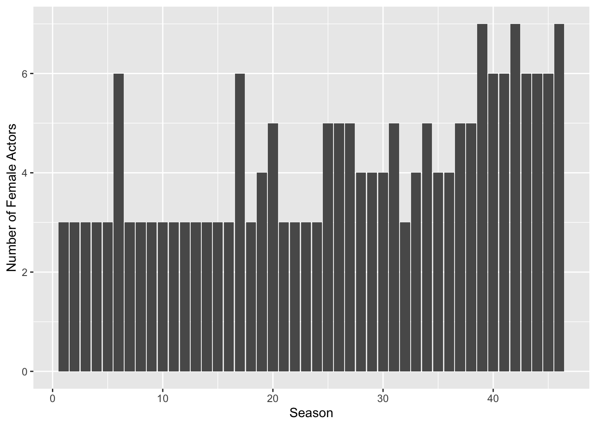
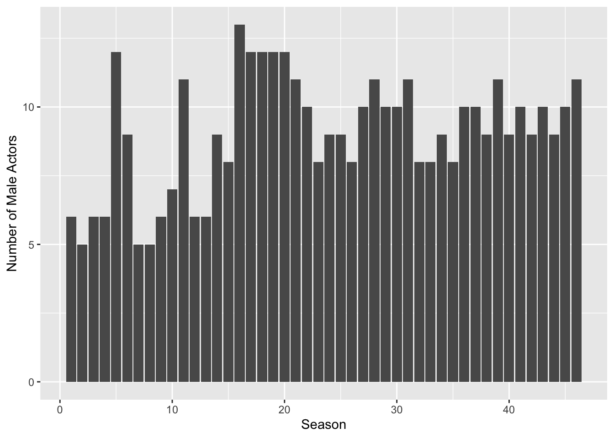
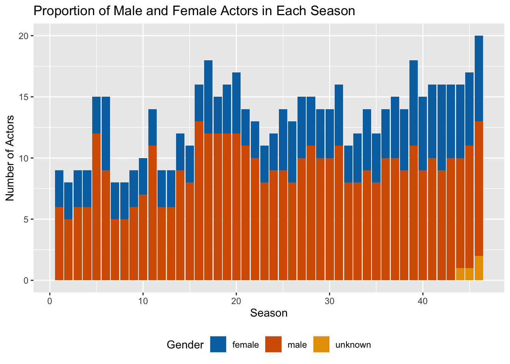

library(tidyverse)
library(ggplot2)
library(purrr)
library(readxl)
library(dplyr)
knitr::opts_chunk$set(echo = TRUE, warning=FALSE, message=FALSE)Challenge 8 Submission
challenge_8
snl
Joining Data
Challenge Overview
Today’s challenge is to:
- read in multiple data sets, and describe the data set using both words and any supporting information (e.g., tables, etc)
- tidy data (as needed, including sanity checks)
- mutate variables as needed (including sanity checks)
- join two or more data sets and analyze some aspect of the joined data
(be sure to only include the category tags for the data you use!)
Read in data
Read in one (or more) of the following datasets, using the correct R package and command.
- military marriages ⭐⭐
- faostat ⭐⭐
- railroads ⭐⭐⭐
- fed_rate ⭐⭐⭐
- debt ⭐⭐⭐
- us_hh ⭐⭐⭐⭐
- snl ⭐⭐⭐⭐⭐
library(readxl)
# read all the csv files separately
actors <- read_csv('_data/snl_actors.csv')
casts <- read_csv('_data/snl_casts.csv')
seasons <- read_csv('_data/snl_seasons.csv')
head(actors)head(casts)head(seasons)Briefly describe the data
This dataset includes three CSV files related to the actors and seasons of a late-night comedy show. The first file actors, has the name, gender, and type of casting for each actor. The second files casts, shows the relationship between actors and the seasons they appeared in, including the number of episodes and other relevant information. The third one seasons, provides details about the year, number of episodes, and identifiers for first and last episodes for each season.
We can use the casts file to join actors and seasons and form a single file that contains all the information.
Tidy Data (as needed)
Data is tidy for the purposes of this challenge.
Join Data
# join sheets by `aid` and `sid`
joined_data <- actors %>%
left_join(casts, by = 'aid') %>%
left_join(seasons, by = 'sid')
# get rid of unwanted columns
joined_data <- joined_data[ , -which(names(joined_data) %in% c("first_epid.x", "first_epid.y", "last_epid.x", "last_epid.y"))]Be sure to include a sanity check, and double-check that case count is correct!
Analysis
We can first plot female and male actors by season and then see a part-whole relationship with a stacked plot. Traditionally, women have been severely underrepresented in comedy. To observe the differences, a stacked plot is helpful because looking at the female data in isolation would show that the number of female actors increased and one could naively infer that SNL did a good job at balancing the gender ratio in their casting. Although, the picture becomes clearer when you look at the whole data and see that it’s not so clear if they did.
library(ggplot2)
# Filter the data to only include female actors
female_actors <- filter(joined_data, gender == "female")
# Group the data by season (sid) and count the number of actors in each season
female_actors_per_season <- count(female_actors, sid)
# Plot the number of female actors per season
ggplot(female_actors_per_season, aes(x = sid, y = n)) +
geom_bar(stat = "identity") +
xlab("Season") +
ylab("Number of Female Actors")
male_actors <- filter(joined_data, gender == "male")
male_actors_per_season <- count(male_actors, sid)
ggplot(male_actors_per_season, aes(x = sid, y = n)) +
geom_bar(stat = "identity") +
xlab("Season") +
ylab("Number of Male Actors")
# Group the data by season (sid) and count the number of actors of each gender in each season
actors_per_season <- count(joined_data, sid, gender)
# Plot the proportion of male and female actors in each season
ggplot(actors_per_season, aes(x = sid, y = n, fill = gender)) +
geom_bar(stat = "identity") +
xlab("Season") +
ylab("Number of Actors") +
ggtitle("Proportion of Male and Female Actors in Each Season") +
scale_fill_manual(values = c("#0072B2", "#D55E00", "#E69F00"), name = "Gender") +
theme(legend.position = "bottom")